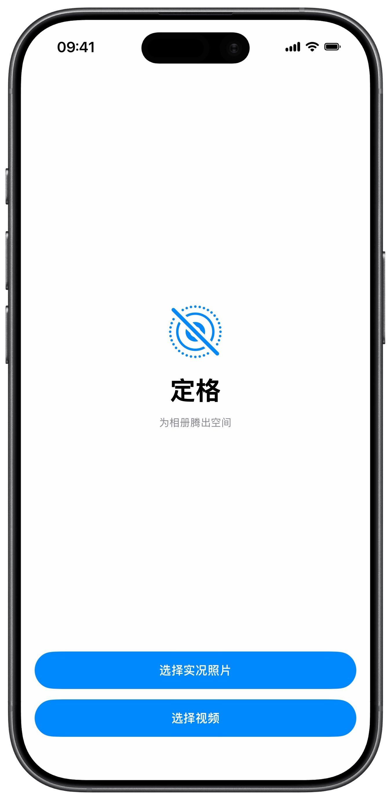
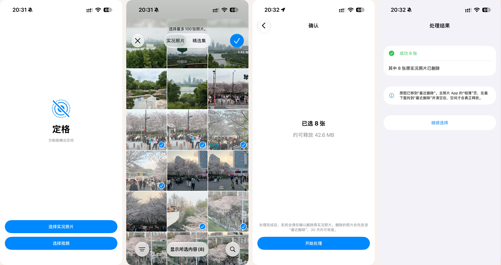
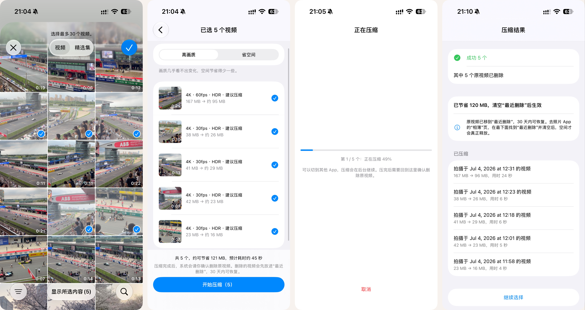

定格Unlive
为 iPhone 相册腾出空间。实况照片去掉视频、视频降低码率——选一次，自动完成，信息一点不丢。 Free up space in your iPhone photo library. Strip the video from Live Photos and shrink videos — pick once, done automatically, nothing lost.

实况照片 → 静态照片Live Photo → Still
留下照片，
去掉那 3 秒视频Keep the photo,
drop the 3-second video
每张实况照片背后都藏着一段视频，往往比照片本身还大。定格直接复制原始静态图的文件数据——不解码、不重新压缩，画质和 EXIF 原封不动。 Every Live Photo hides a short video that's often bigger than the photo itself. Unlive copies the original still image's bytes as-is — no decoding, no re-compression, so quality and EXIF stay untouched.
- 1原样复制Byte-for-byte copy — 新照片和原图的静态部分大小基本一致— the new photo matches the original still in size
- 2时间线位置不变Same place in your timeline — 不会跑到"最新"— it won't jump to "most recent"
- 3编辑过的也行Edited photos too — 按你看到的样子生成，处理前会提醒— saved as you see them, with a heads-up first
* 动画中的大小为示意。实测：8 张实况照片约释放 42.6 MB。* Sizes in the animation are illustrative. Measured: 8 Live Photos freed about 42.6 MB.
压缩视频Video compression
看起来一样，
体积约减半Looks the same,
about half the size
iPhone 拍的 4K60 视频码率很高，一分钟约 440 MB。定格用手机的硬件 HEVC（10bit）重新编码，只降低码率：分辨率、帧率、每一帧的时间都不变。 iPhone 4K60 video runs at a very high bitrate — about 440 MB a minute. Unlive re-encodes it with the phone's hardware HEVC (10-bit) encoder and only lowers the bitrate: resolution, frame rate and every frame's timing stay the same.
- ⇅两档可选Two presets — 高画质 / 省空间；码率本来就不高的会标"无需压缩"— High Quality / Save Space; already-lean videos are marked "no need"
- ✓先验证后删除Verified before deleting — 新视频能正常读取、时长一致，才删原视频— the original goes only after the new file plays and matches in length
- ↗可以切到后台Keeps going in the background — iOS 26 起，系统在灵动岛显示进度— on iOS 26+, progress shows in the Dynamic Island
批量处理Batch processing
选一次，就够了Pick once. That's it.
系统相册的"复制为静态照片"复制完后，选择就消失了——你得回到相册，把散落在各处的原图一张张重新找出来删掉。定格把整件事一次做完。 Photos' "Duplicate as Still Photo" clears your selection afterwards — so you have to hunt down each scattered original again to delete it. Unlive does the whole thing in one go.
系统相册Photos app
点击Taps 0- 选中 6 张实况照片Select 6 Live Photos
- 复制为静态照片Duplicate as Still Photo
- 选择状态消失了Selection is gone
- 回到相册，一张张找回原图Hunt down each original again
- 删除原图Delete the originals
定格Unlive
点击Taps 0- 滑动选中 6 张Swipe to select 6
- 点"开始处理"，自动生成静态照片Tap Start — stills are created
- 系统确认一次，删除全部原图Confirm once — all originals deleted
信息不丢Nothing lost
新文件，还是原来的样子A new file that's still the same memory
照片库里的信息和文件里的信息都会带过去，新文件出现在图库里原来的位置。Both library-level and file-level details carry over, and the new file sits right where the original was in your library.
放心Safe by design
删除之前，先把关Checked before anything is deleted
先生成、后删除Create first, delete after
新文件确认写进相册后，才删除对应的原件；失败的一律不动。An original is deleted only after its replacement is confirmed in your library. Failures are left untouched.
系统只问一次One confirmation
所有删除放在一次操作里，系统只弹一次确认框。误点了"不允许"？结果页还能再删一次。All deletions happen in one step, so iOS asks just once. Tapped "Don't Allow" by mistake? You can try again from the results page.
30 天后悔期30 days to change your mind
原件先进"最近删除"，30 天内都能恢复。App 中途被关掉，下次打开也会提醒你。Originals go to Recently Deleted and can be restored for 30 days. If the app is closed mid-way, it reminds you next time.
真实界面The real thing
就这么几步Just a few steps

